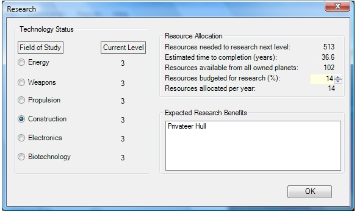
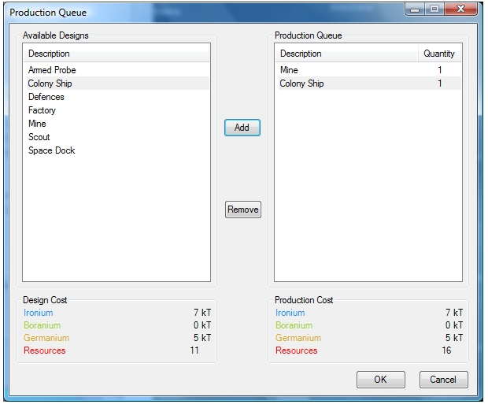
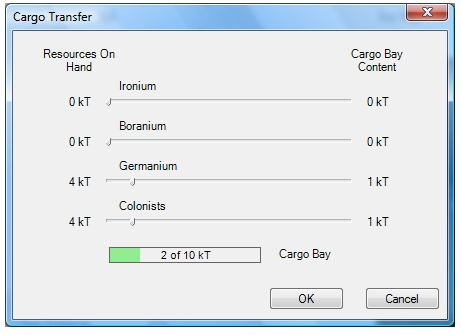

Research Dialog
Here is a sample of the dialog for setting research parameters:

And adding items to a planet's production queue is pretty much as you would expect:

Here's what it looks like when loading (or unloading) cargo from a ship:
